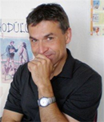

Štíhlé myšlení ® ve výrobě i administrativě
Moderní pohled na dynamické a flexibilní řízení procesů v praxi.
Cíl a přínosy: Hlavním přínosem semináře je komplexní pohled na propojení výrobních a administrativních procesů, kterých úspěšné zavedení podmiňuje týmová spolupráce a fungující interní komunikace. Seminář nemá charakter klasického školení specifických štíhlých nástrojů, ale zaměřuje se na systémový a globální pohled na způsoby zeštíhlení a optimalizaci procesů v rámci celé organizace/firmy. Přinese účastníkům množství konkrétních modelových situací vycházejících z reálných projektů, kterých se prakticky účastnil lektor, pan Dalibor Křivánek (reference na konci popisu).
OBSAH:
- Principy štíhlého myšlení®
- Firemní kultura pohledem štíhlého myšlení® - pravidla a rizika
- Proces změny v prostředí štíhlé organizace (výrobní/administrativní)
Forma semináře: neformální prezentace dané tématiky lektorem a průběžná otevřená diskuze účastníků, s možností reagovat a sdílet vlastní zkušenosti z jejich procesů.
Jako doprovodné pomůcka budou použity různé tematické materiály (videa, formuláře, prezentace, fotografie, techniky atd.) a to především z reálné praxe a příkladů lektora.
Vhodné pro: majitelé firem, jednatelé, vrcholoví manažeři a všichni ti, kteří mají ve firmách vliv na strategické rozhodování směrem k výkonnosti a stability procesů, jako i na nastavení týmově orientovaných cílů a zlepšení interní komunikace.
SETKÁNÍM VÁS BUDE PROVÁZET: Ing. Dalibor Křivánek
Absolvent Žilinské univerzity. Během své profesní praxe prošel řadu pracovních pozic, zejména ve výrobních organizacích. Mimo jiné jako technolog/konstruktér, vedoucí výrobních týmů i jako Lean specialista. V oboru zavádění konceptu štíhlé výroby je od roku 2001, kdy začal působit na pozici výrobního manažera nizozemské společnosti Océ, kde byl zodpovědný za 5 výrobkových produktů, plánovaní a optimalizaci výroby. Jako expert pro zvyšování produktivity a trvalého zlepšování působil ve společnosti Mecaplast CZ a zde byl i členem dvou mezinárodních týmů (produktivity a lean team) v rámci tohoto nadnárodního koncernu. Od roku 2007 provozuje poradenskou a lektorskou činnost v různých formách školicí činnosti, nebo přímo účastí na projektech zvyšování produktivity a zavádění lean konceptu pomocí workshopů a koučinku.
Účastníci jeho kurzů oceňují především otevřenou atmosférou, znalosti podložené bohatou praxí a schopností převést teorii do reálného prostředí praxe zábavnou formou výuky a schopností najít cestu ke každému účastníku osobitě. Jeho školení a projekty doposud absolvovalo minimálně 3.700 účastníků. Bylo to minimálně 75 společností z různých odvětví (automotive, strojírenství, hutnictví, potravinářský průmysl, zdravotnictví, elektrotechnický a telekomunikační průmysl, dřevařský, gumárenský a nábytkářský průmysl, atd.) s účastí na projektu zavádění změn a optimalizaci procesů, nebo uzavřeném firemním vzdělávání.
Podílel se na přípravě podkladů učebnice a školení středoškolských učitelů v rámci projektu Auto Academy pro střední odborné školy Moravskoslezského automobilového klastru v části "Štíhlé myšlení a štíhlá výroba". V průběhu své lektorské praxe zrealizoval i publikační činnost do časopisů "Strojárstvo / Strojírenství", "Manažér", "Hospodárske noviny" a účastnil se i na živém vysílání Slovenského rozhlasu (SRo1) v relaci "Nočná Pyramída!" v moderovaném dialogu "Zamestnanci, najväčšie bohatstvo firiem" + připravil další příspěvky "Toyota" v relaci "Pozor, Zákruta!" a "Ako zarobiť na finančnej kríze" v relaci "Radíme podnikateľom"
MÍSTO KONÁNÍ: PRAHA
DATUM: 8.4.2014
ČAS: 10,00 - 16,00
CENA: 4.200, - KČ
Objednávejte: eshop.everesta.cz